Shooting the Pictures
First, I shot these photos from my phone behind Li Ka Shing, Berkeley Way West, and Crescent Lawn. In class, we know that these form a homography because we're keeping the camera in one spot and taking photos which are a projective transform of one another.
Set 1
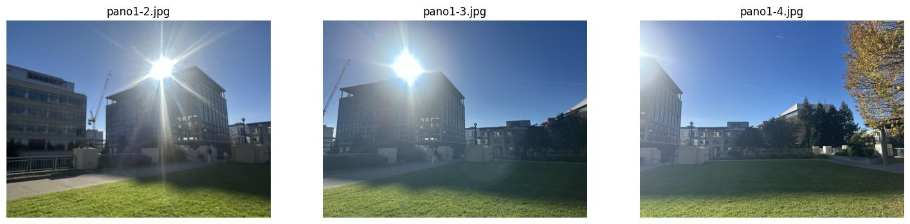
Set 2
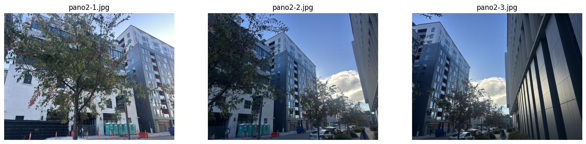
Set 3
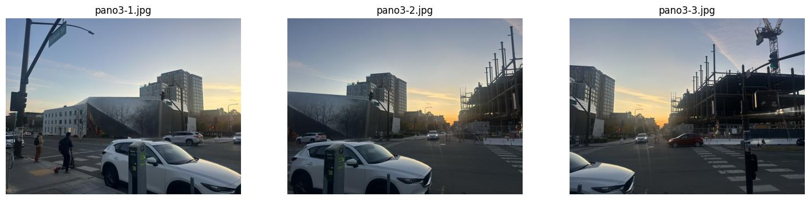
Recovering Homographies
A homography maps a point \( (x, y) \) in one image to \( (x', y') \) in another: \[ \begin{bmatrix} w x' \\ w y' \\ w \end{bmatrix} = \begin{bmatrix} a & b & c \\ d & e & f \\ g & h & 1 \end{bmatrix} \begin{bmatrix} x \\ y \\ 1 \end{bmatrix} \]
I did the algebra by dividing by w and isolating x' and y', yielding two linear equations. In matrix form:
\[ \begin{bmatrix} x & y & 1 & 0 & 0 & 0 & -x'x & -x'y \\ 0 & 0 & 0 & x & y & 1 & -y'x & -y'y \\ & & & & \vdots & & & \end{bmatrix} \begin{bmatrix} a \\ b \\ c \\ d \\ e \\ f \\ g \\ h \end{bmatrix} = \begin{bmatrix} x' \\ y' \\ \vdots \end{bmatrix} \]
We have to use four or more points because in a projective transform, there are 8 degrees of freedom (four points times two variables yields this). I decided to do 10 for each image just for sanity and annotated them with a tool I built.
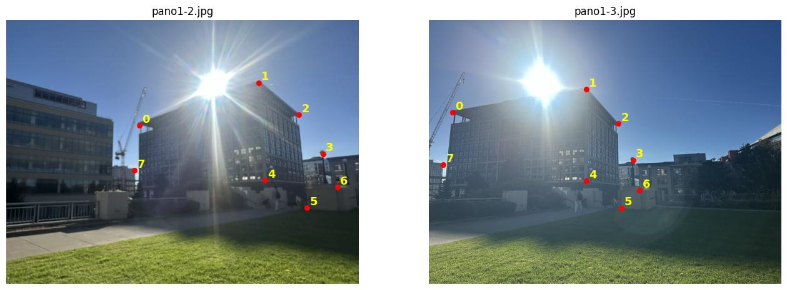
Solving with least squares gives the homography from pano1-2 to pano1-3: \[ H = \begin{bmatrix} 1.846 & -0.157 & -889.16 \\ 0.486 & 1.504 & -465.64 \\ 0.0006 & -0.0001 & 1 \end{bmatrix} \]
Warping the Images
Inverse warping, as opposed to forward warping, is where we loop through pixels in the output and use linear interpolation to ask the question, where (softly) did this pixel valeu come from? We implemented this using a bounding box and an alpha max for pixels that didn't have a source pixel.
Nearest Neighbor vs. Bilinear
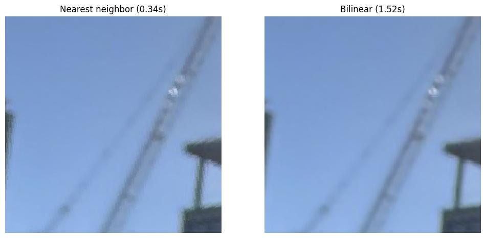
Nearest neighbor took 0.34s on my last run whereas bilinear took 1.52s, but you can see that diagonals are blurred to look smooth. Nearest neighbor runs faster but the image looks pretty pixelated.
Rectification
Rectification is basically annotating the corners of a rectangle then mapping them onto a real rectangle to "flatten" out the surrounding image. Here's my attempt with a shake shack sign and the service box of a tennis court:
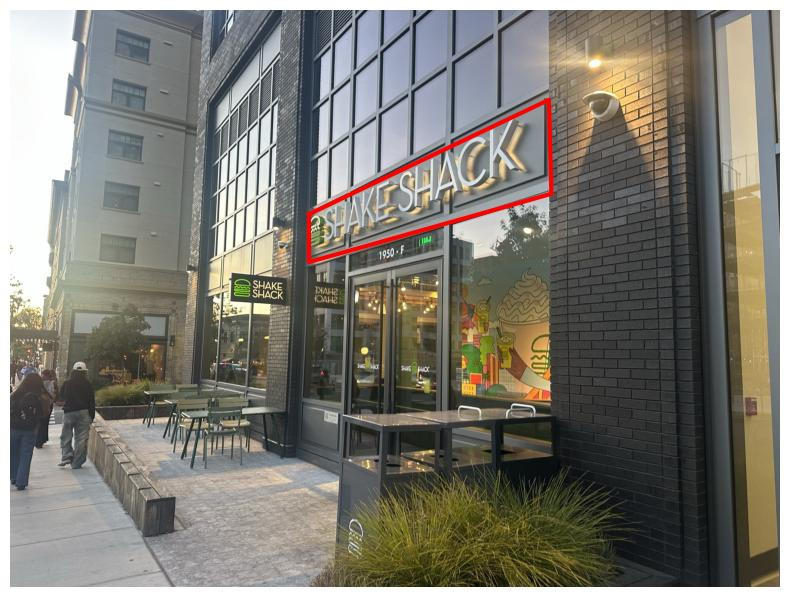
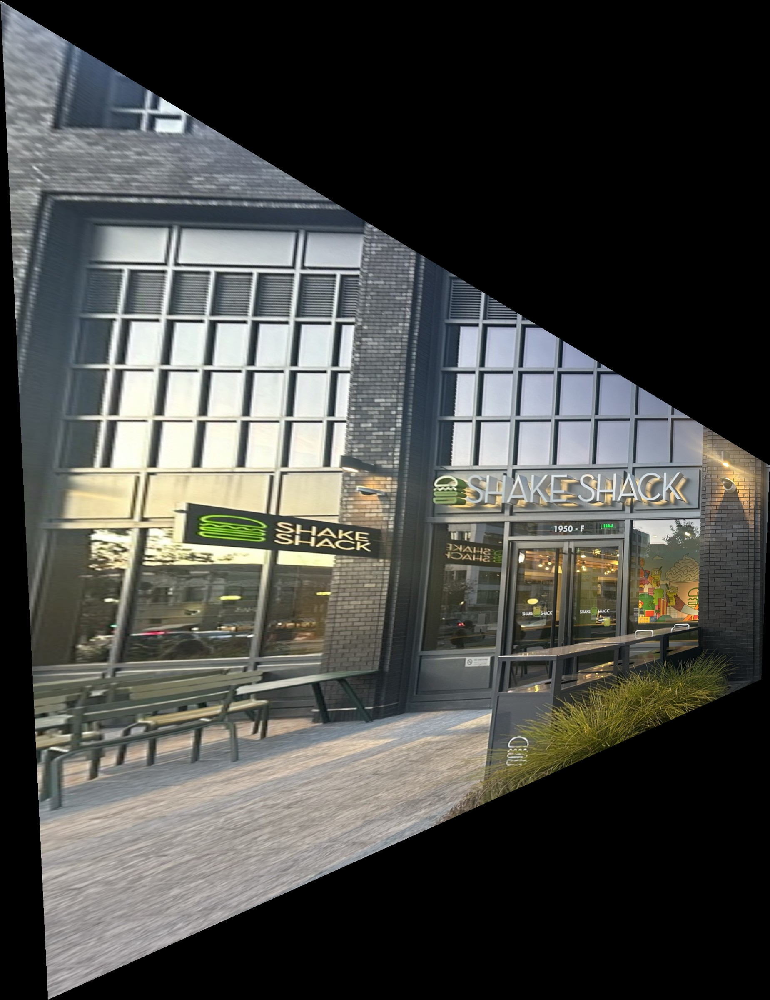
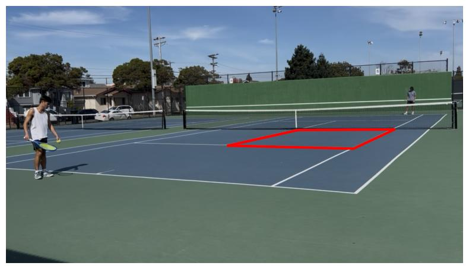
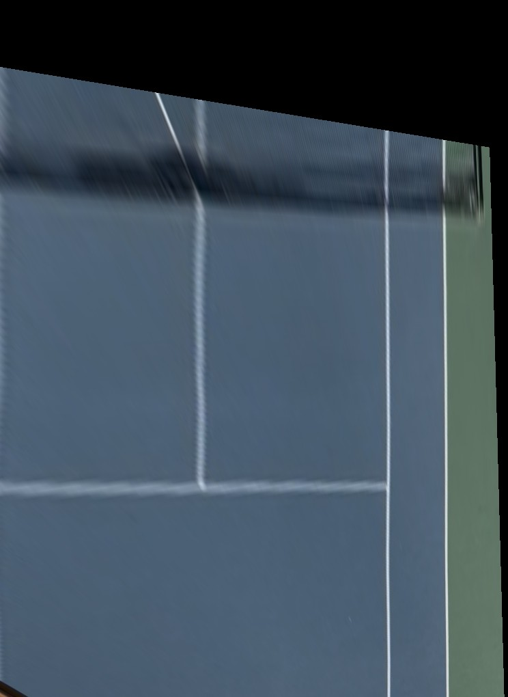
Blending into a Mosaic
Here are the pictures I took earlier again, but this time as a mosaic! Here I chose the middle image of each set as the reference and warped the left and right images to line up with the middle. We used feathering to smooth out the connection between images which required zero padding at the edges (we forgot this at first which caused a hard seam).
Mosaic 1
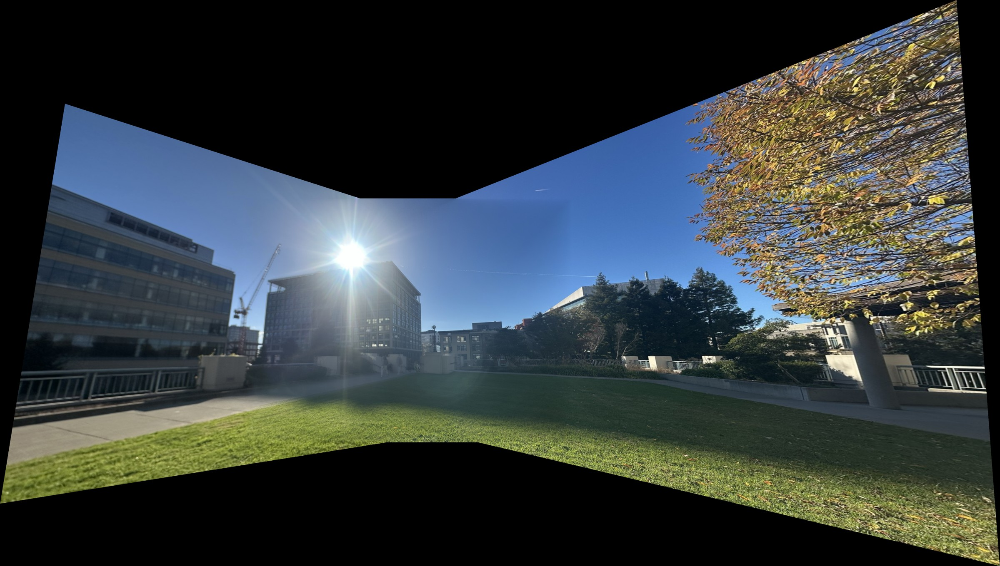
Mosaic 2
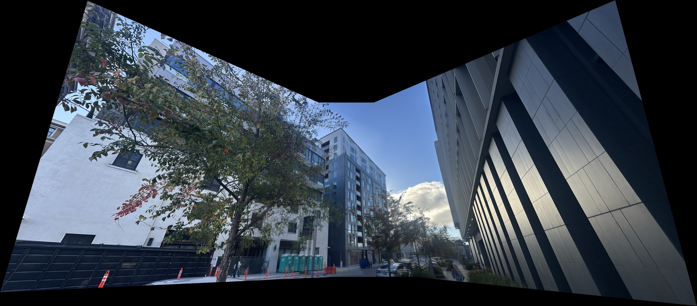
Mosaic 3
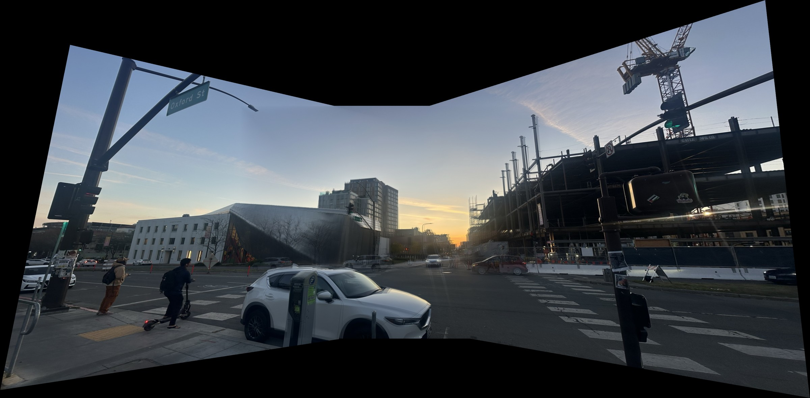
In this project I learned how to stitch together mosaics using homographies! Some things I learned were that misclicks could be super punishing (as one misaligned ledge in the first photo caused a distortion at first), moving things sometimes got distorted (you can see a faded red car in the last image), and that we have to do a lot of funky things to prevent seaming in the panoramas.